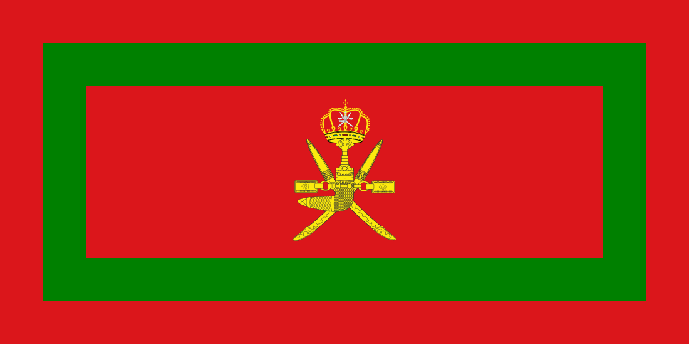

Significant Historical Events

The Age of Maritime Trade
Oman’s history as a maritime power flourished during the 17th century, with its strategic location linking Asia, Africa, and Europe.

The Al Bu Said Dynasty
Established in 1744, the Al Bu Said dynasty modernized Oman and has ruled the nation ever since.